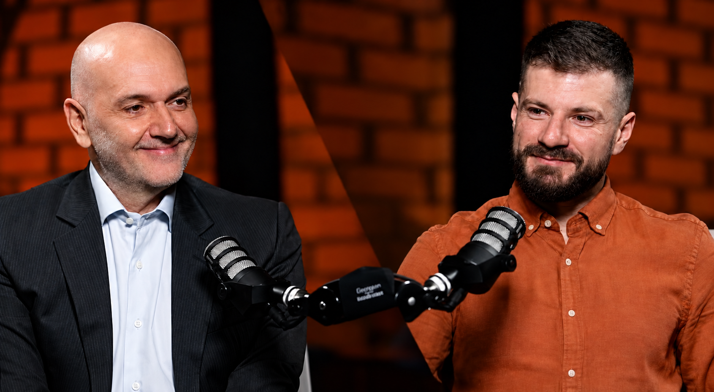
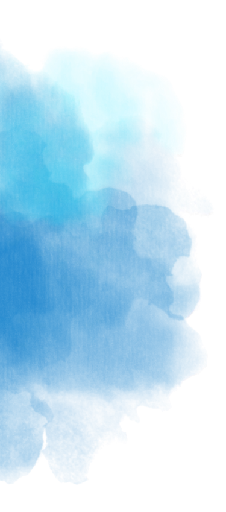
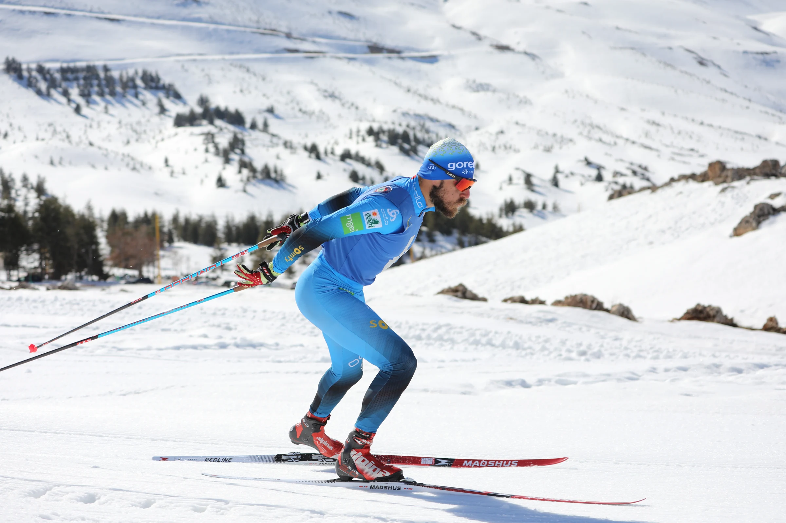
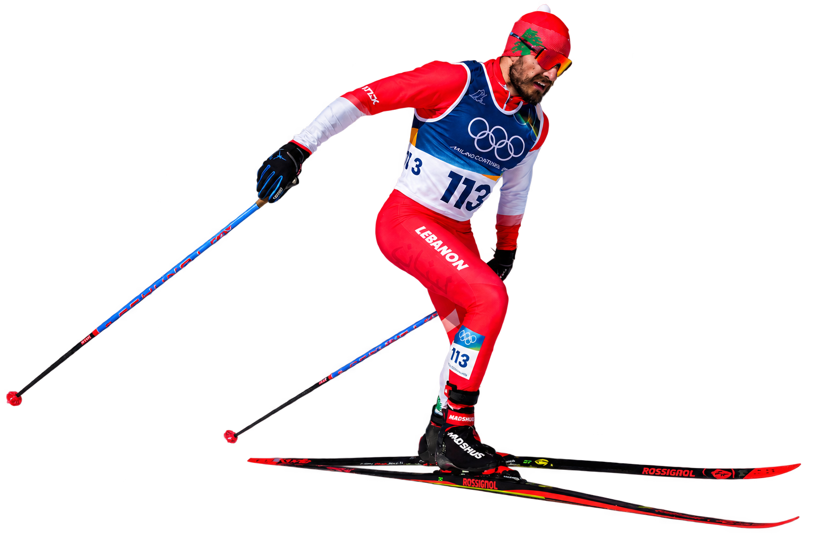
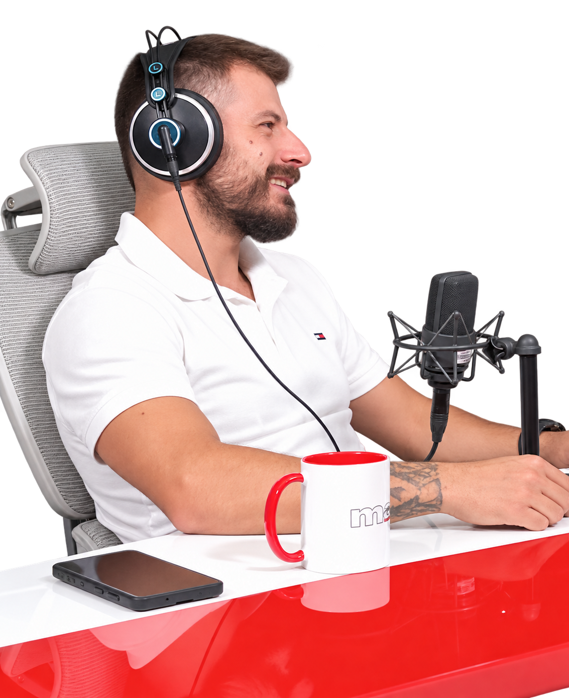
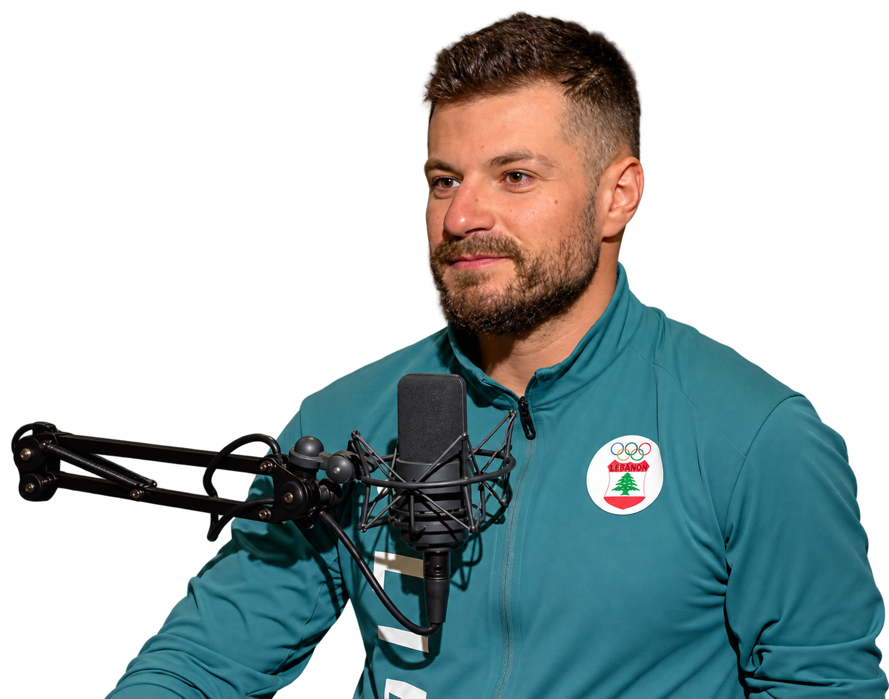
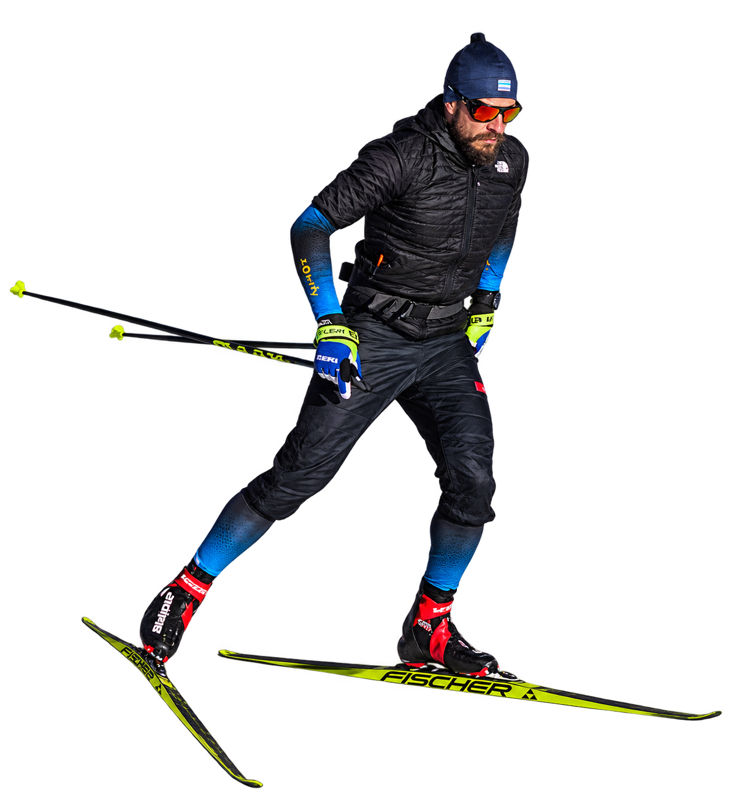
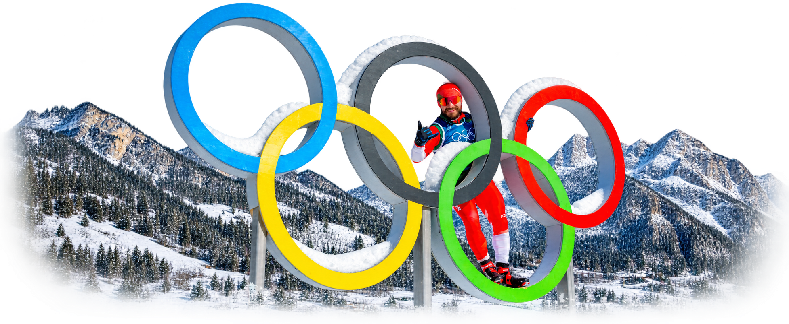

CONVERSATIONS WITH RICARDO KARAM · EPISODE 98


PRESS
- Olympics.com
- L’Orient Today

Over the years, I’ve been honored to share my story around the world and across Lebanon from the Olympic Channel and international publications in more than 15 languages to national television on MTV, LBC, and Al Jadeed, and from The Ricardo Karam Experience podcast and Mesh Masrahiye to the TEDx stage and audiences at universities and in the private sector. My journey has also been featured by DW, Süddeutsche Zeitung, Sport360, L’Orient-Le Jour, CNN Arabic, and The National, taking the story of my return to the Olympic stage far beyond Lebanon.



Featured Press.


BEYOND THE HEADLINES
Podcasts & conversations.
Watch Samer on Mish Masrahiye
LET’S START A CONVERSATION